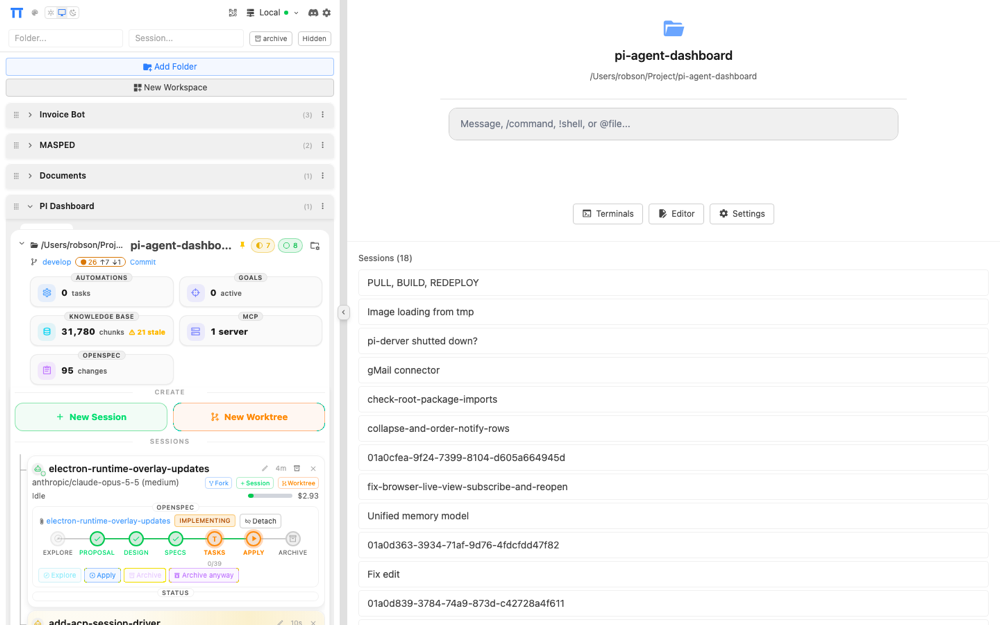
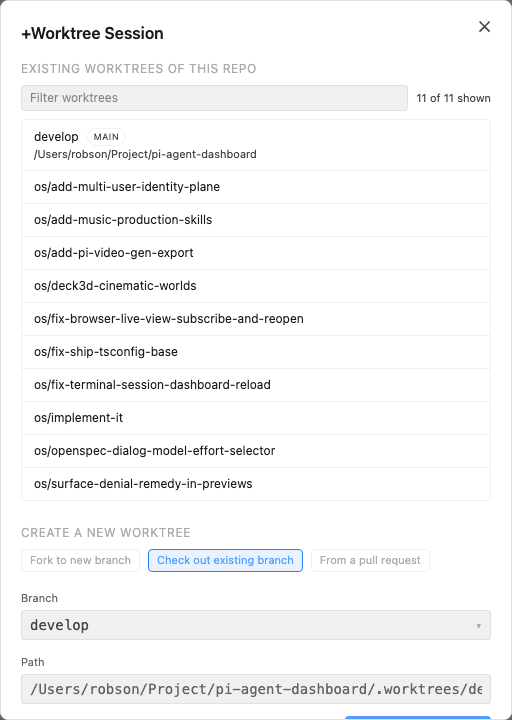

idle
worktree
A1 · Folder new-session tray
Same layout. green-400/orange-400 → --tint-green-*/--tint-orange-*.
A2 · Session card actions + badges
10 px py-0 chips → 12 px chips with a 32 px target (44 px on mobile). Status stays --status-*.
Resuming…
add-acp-session-driver
A3 · +Worktree dialog
Uppercase --text-muted headings (2.3:1) → --text-secondary. Source toggle 23 px → 32/44 px. Submit bg-blue-500/80 → --accent-solid. Collision warning yellow-300 → --severity-warning-*.
+Worktree Session
Existing worktrees of this repo
- develop main
- os/fix-ship-tsconfig-base
Create a new worktree
Branch "os/fix-ship-tsconfig-base" already exists and is checked out at .worktrees/os-fix-ship-tsconfig-base.
New worktrees start clean. Copy .env and run install steps manually.
A4 · Goal detail controls
16 px text-[10px] py-px buttons → 32/44 px chip buttons; indigo-400 → --tint-purple-*; delete → --tint-red-*.
pursuing
Ship ACP session driver
Verdicts
t14progresse2e harness green on macOS
t13stalledwaiting on fixture capture
A5 · Select / confirm prompt
Already token-based; only options gain a 36/44 px target and 13 px text.
Which base branch?
A6 · Automation dialog header + help text
10 px --text-muted help (2.2:1) → 12 px --text-secondary; hard-coded #6ee7b7 badge → --tint-green-*.
nightly dependency audit
enabled.pi/automations/nightly-dependency-audit.md
Next run: tomorrow 03:00
File path is required for this action.
Before (live, 2026-09-27)

